安装SSL证书心得：Android端
要先设置手机中Wifi代理为Charles后才能下载到ssl证书
在手机端浏览器打开：
去下载ssl证书文件之前，千万记得要去手机端给Wifi设置Charles的代理，才可以。
否则就会显示出普通的网页，而不会出现弹框和下载证书文件。
而无法看到，弹出下载文件的弹框的，无法下载到证书文件。
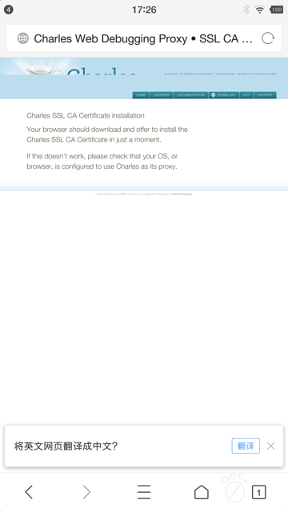
不同移动端下载到的证书名和格式不太相同
经过多次的折腾而了解到，不同的移动端
- 真机：小米4
- 真机：小米5，红米5A
- 模拟器：网易MuMu Mac版
- 模拟器：夜神 Mac版
等，在浏览器打开
会自动弹框，去下载到的Charles的ssl证书，不同手机端往往有不同的文件名和后缀。
典型的有：
- 真机：
锤子M1L Android 6.0.1- pem文件：
charles-ssl-proxying-certificate.pem- 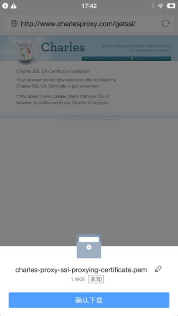
- pem文件：
- 真机：
小米9 Android 9.0- pem文件：
charles-ssl-proxying-certificate.pem- 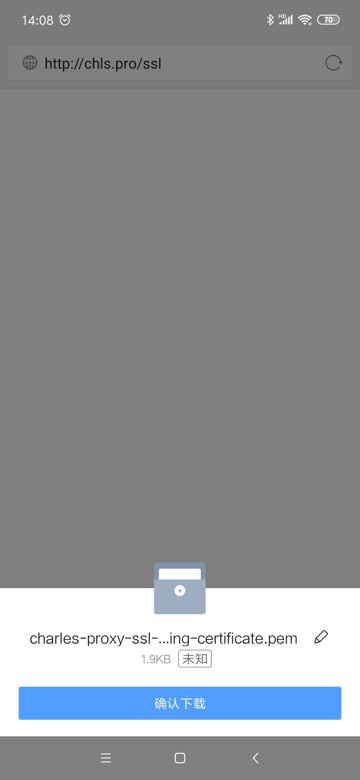
- pem文件：
- 真机：
小米5，红米5A，小米4- 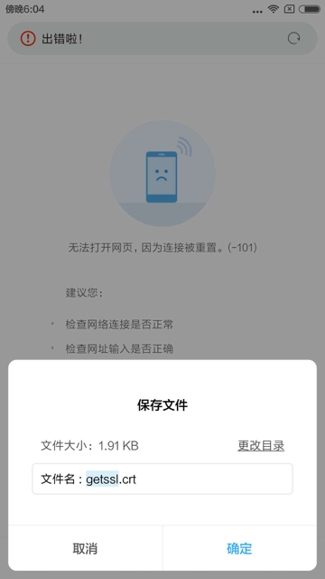
- crt文件：
getssl.crt- 注：
- 后来无法正常安装此
getssl.crt证书 - 而改用之前已下载的
charles-ssl-proxying-certificate.pem才成功安装到小米4中
- 后来无法正常安装此
- 注：
- 模拟器：
网易MuMu- crt文件：
downloadfile.crt
- crt文件：
- 模拟器：
夜神Mac版- 直接跳出证书安装界面
- 不知道，也无需知道证书文件名
- 直接跳出证书安装界面
目前的理解是：
-》好像是crt和pem的证书文件内部格式是不同的。
-》不过，不论是crt还是pem，都是可以正常安装证书的。
可直接安装证书而并非一定要去下载
对于手机端去安装Charles的ssl证书来说
其实不一定非要根据官网说的，通过浏览器打开
去弹框下载ssl证书文件，再去安装。
而只要得到了Charles的ssl证书文件，即可直接点击去安装即可。
而得到Charles的ssl证书的方法，可以：
- 直接把之前下载过的证书文件
- PC端Charles导出的证书文件
发送到手机端即可，然后再安装就行了。
比如：把之前小米9中浏览器下载到的pem证书：
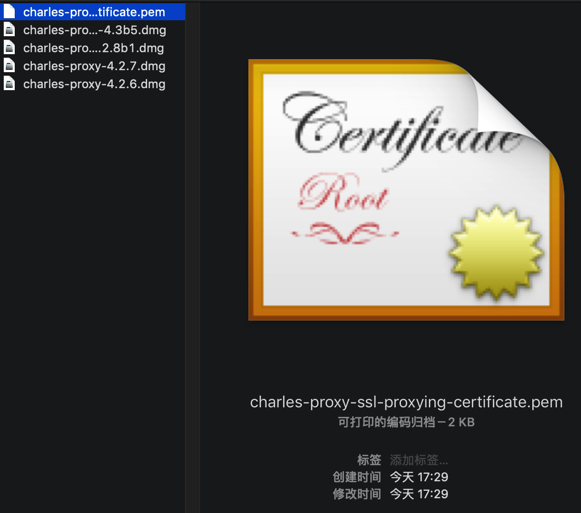
（此处通过微信或QQ去）发送到手机，比如锤子M1L，中：
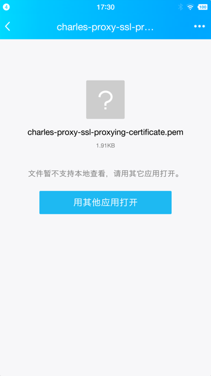
然后点击去安装证书，后续流程和前面标准过程中就是一样的了。
PC端用Charles导出的ssl证书文件
可以通过PC端的Charles去导出ssl证书文件：
Help -> SSL Proxying -> Save Charles Root Certificate
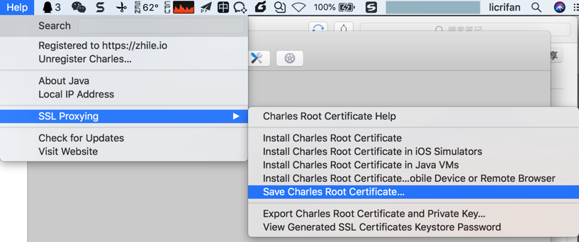
导出得到pem文件：
charles-ssl-proxying-certificate.pem
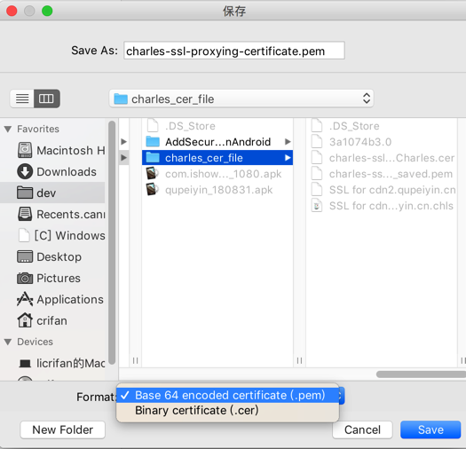
从图中可以看出，也可以导出cer格式的证书文件的。
用某些方式无法正常安装证书
有时候会遇到证书无法正常安装
此时，对应的位置就没有证书：
受信任的凭据 -> 用户 是空的：
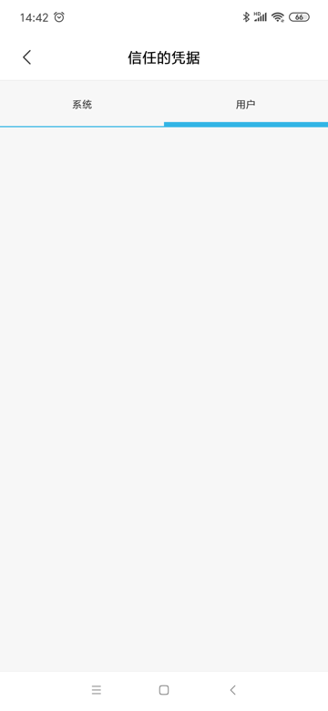
用户凭据中也是空的：
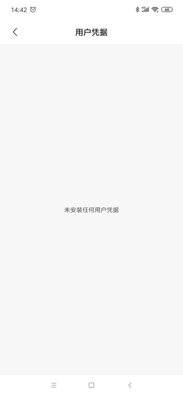
下面整理一些无法安装证书的情况：
直接点击证书却无法识别和安装
有些手机系统中，直接点击Charles的ssl证书文件，却无法识别和安装
比如小米9中QQ浏览器点击pem证书文件，结果只弹出了爱奇艺，而不是开始安装的界面：
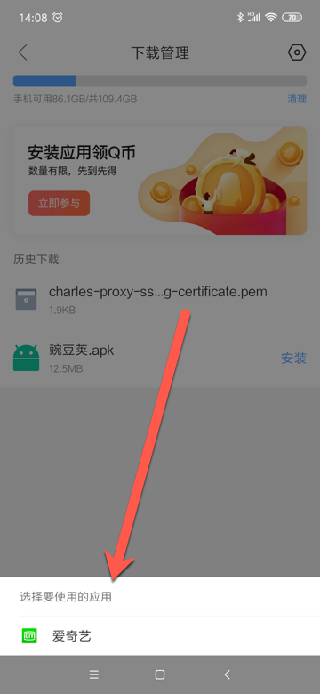
直接从系统设置中搜索到的安装证书是无法直接点击安装的
之前在已下载证书文件（但是应该是没有把证书放到特殊指定位置），然后只是通过安卓系统的设置中，搜索出相关证书选项。
然后去点击安装时，都是无法找到并安装证书的：
比如，小米9中的设置中：
- 搜
安装证书，点击安装证书，提示没有可安装的证书- 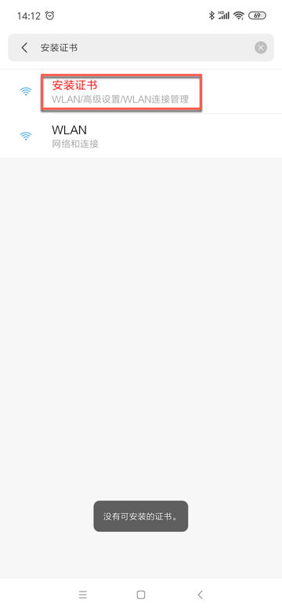
- 搜
安装，点击从存储设备安装，提示没有可安装的证书- 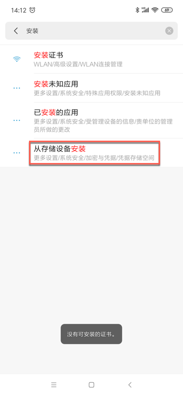
有时候从ES文件管理器中点击证书选择证书安装程序去安装都无效
此处还遇到很奇怪的，小米9中，用ES文件管理器，找到已下载的证书了。
选择其他方式去打开：
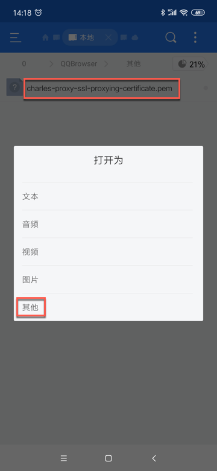
再去选，觉得应该可以的，证书安装程序：
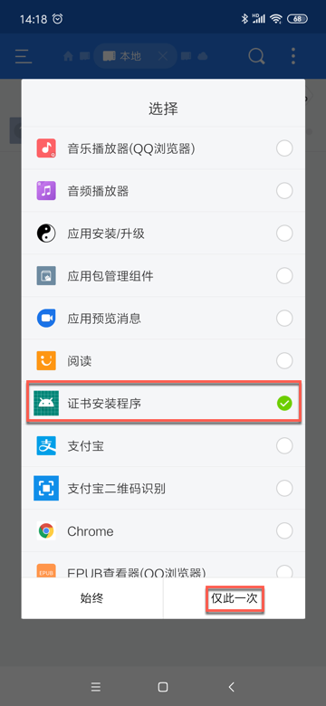
结果都没任何反应，证书最终都没有正确安装。
如果无法安装证书，则可以通过从存储设备安装去安装
如果遇到（前面几种方式）无法安装证书时，可以考虑通过系统设置中的从存储设备安装去安装。
比如：
- 小米9中是：
设置 -> 更多设置 -> 系统安全 -> 加密与凭据 -> 从存储设备安装- 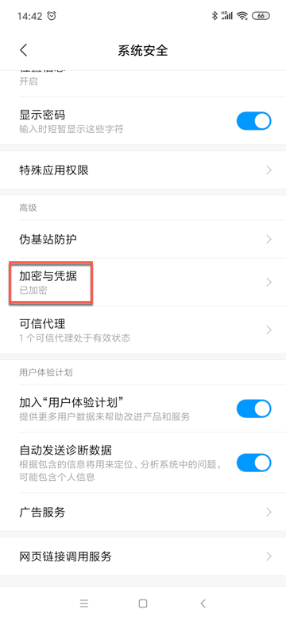
- 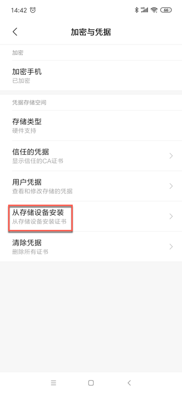
- 小米4中是：
设置 -> 其他高级设置 -> 安全和隐私 -> 凭据存储 -> 从存储设备安装- 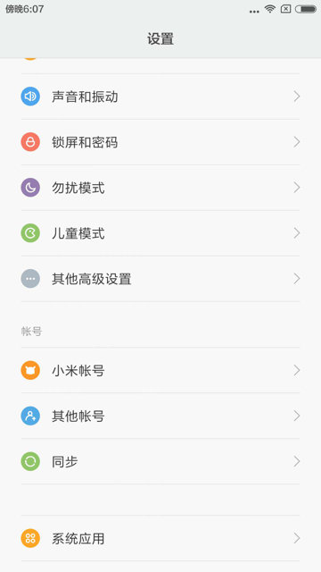
- 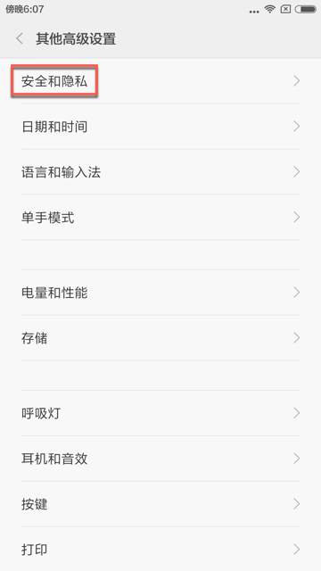
- 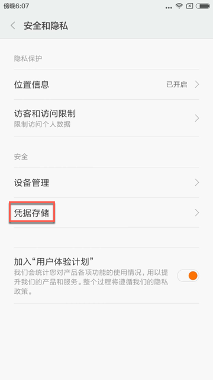
- 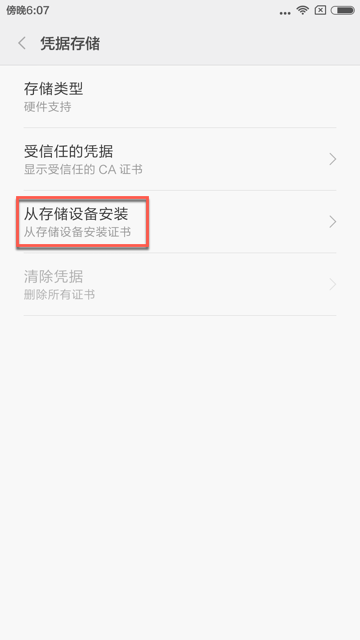
点击从存储设备安装后，进入文件选择界面
注意：刚进入文件选择界面时，会默认显示的最近里往往是空的，看不到我们要的证书文件：
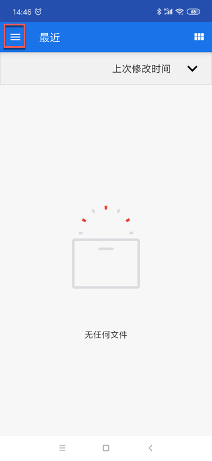
所以要去点击左上角三个横线，去切换到手机的存储设备中：
此处是MI 9：
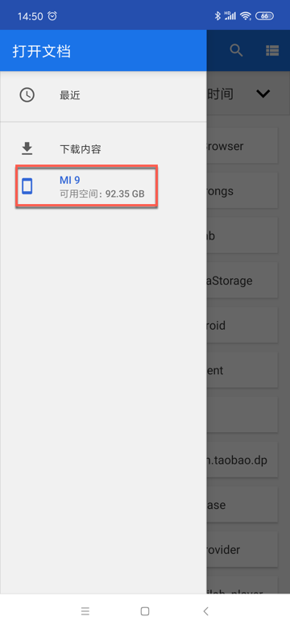
然后找到刚才下载到的证书文件：
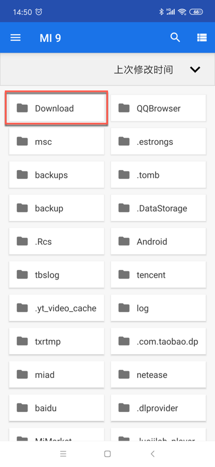
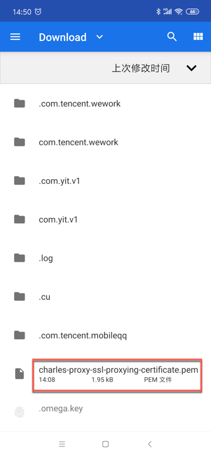
点击对应证书文件，此处的pem文件，即可正常继续安装。
手机中安装了ssl证书后
会导致手机不安全，系统会有安全警告，如果后续不用，记得删除掉
成功安装Charles的ssl证书后，导致增加了中间人攻击的风险，手机变得不够安全，所以系统会有安全提示：
网络可能会受到监控 受到不明第三方的监控
比如：
- 小米4
- 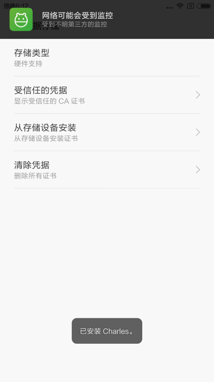
- 某安卓真机
- 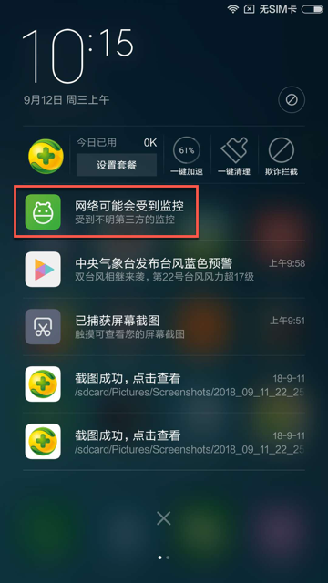
- 点击后，可以查看到对应的证书，即此处的Charles证书
- 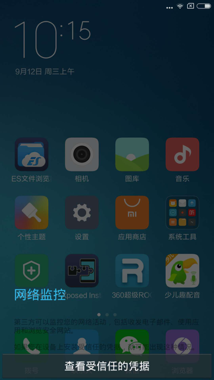
- 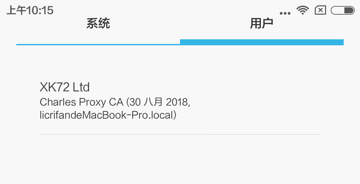
- 网易MuMu安卓模拟器
- 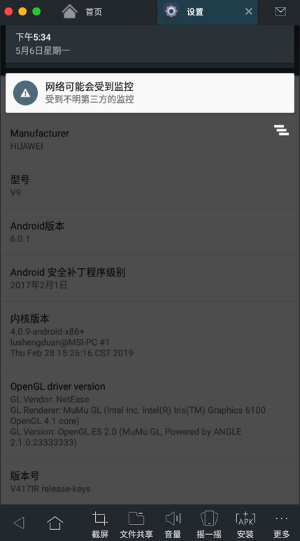
- 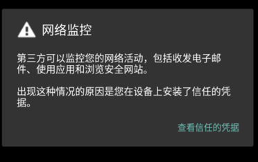
- 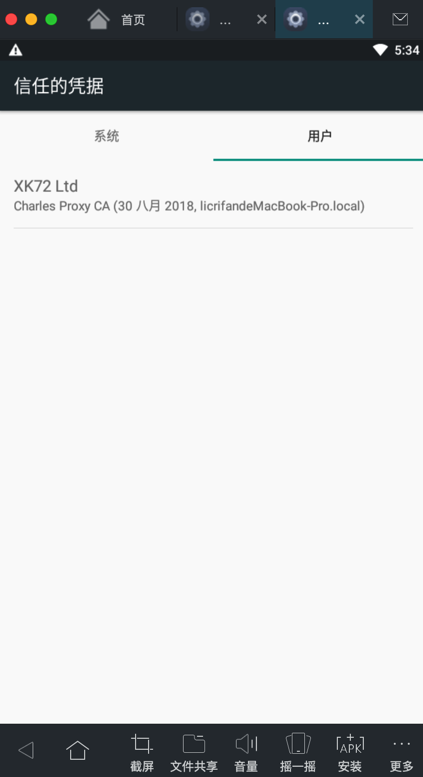
所以：如果在你调试抓包完毕之后，不再抓包时，记得卸载掉手机中的CA证书：
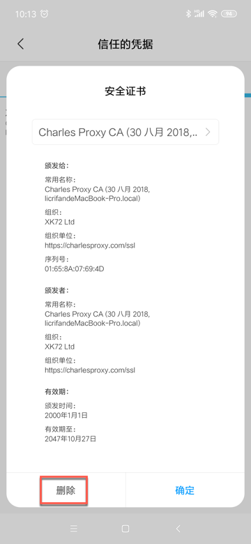
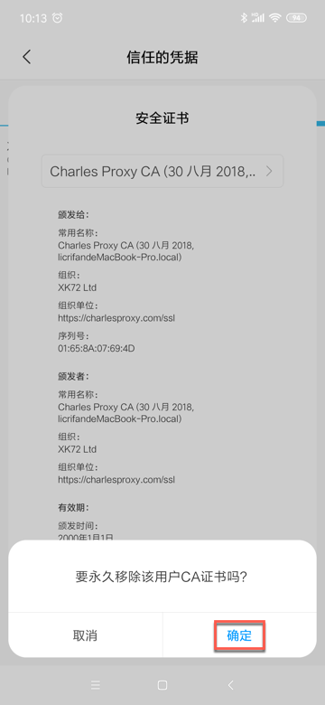
让手机恢复安全。
部分应用的H5页面会有警告和提示
目前已经发现的有：
- 小米9 安卓9.0
- 安装了Charles的ssl证书后
- 京东app
- 打开H5页面会提示
当前网站证书不可信且证书链长度为1，可能是服务器没有配置完整证书链，是否信任并继续访问？- 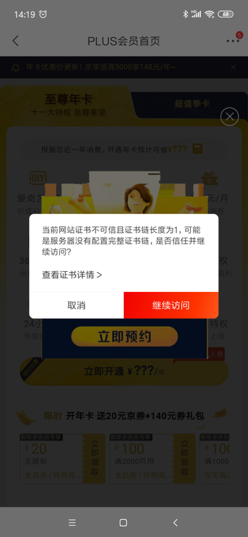
- 点击后，可以看到的确是Charles的证书
- 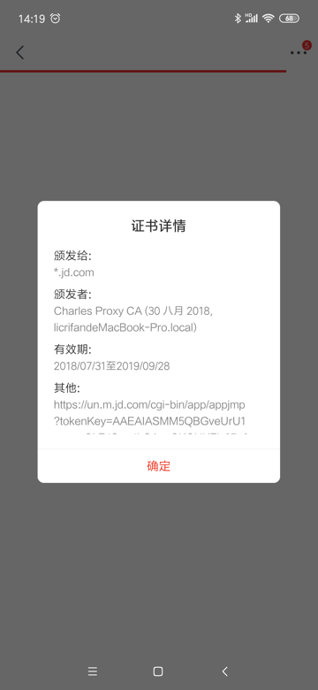
- 有时候此警告会频繁跳出，点击关闭的速度都赶不上跳出警告的速度，导致无法正常继续查看页面内容
- 点击后，可以看到的确是Charles的证书
- 打开H5页面会提示
- 支付宝app
- 在用支付宝支付时，会弹出当前支付环境不可信，是否继续支付 之类的提示
- 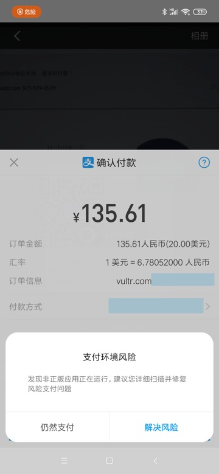
- 在用支付宝支付时，会弹出当前支付环境不可信，是否继续支付 之类的提示
- 京东app
- 安装了Charles的ssl证书后